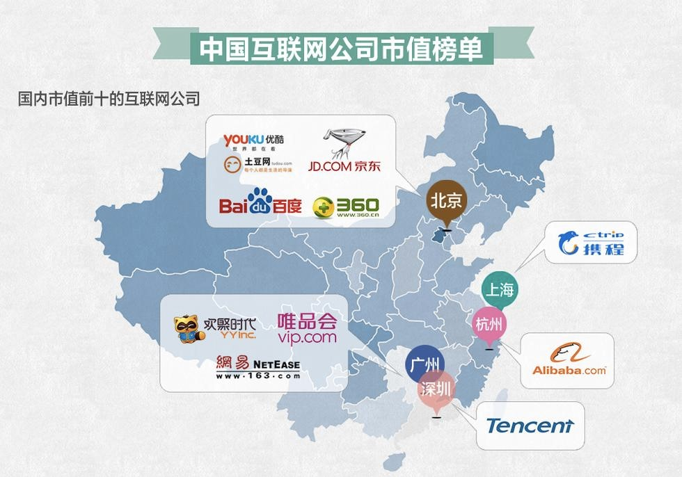

上篇 等风入沪
李克强总理在2015年的《政府工作报告》中强调，大众创业、万众创新是拉动中国经济发展的"双引擎"之一。在过去一年中，"新登记注册市场主体达到1293万户，其中新登记注册企业增长45.9%，形成新的创业热潮"。其中，互联网金融异军突起，电子商务、物流快递等新业态快速成长，新一轮移动互联网带来的创业之风，托起来自经济软着陆和大学生就业的双重压力，成为2015年政策导向的重心。
上海无疑是这一波互联网创业浪潮中最受益的城市。2014年5月，习近平总书记在上海考察工作时明确要求，上海要加快建成具有全球影响力的科技创新中心。
时隔一年，中共上海市第十届委员会第八次全体会议通过了《关于加快建设具有全球影响力的科技创新中心的意见》，意在从顶层构建上海科创蓝图。
在前所未有的政策红利之下，相关概念股早已在资本市场御风而起，外高桥、浦东金桥、张江高科等股票几度涨停。
然而，并不是所有人都真心看多。
与北京、广州、深圳甚至杭州相比，上海并不是一个适合互联网创业的城市。八年前俞正声的质问言犹在耳："上海为什么出不了马云？"在一些人看来，这个孕育着海派文化的城市，重工业密集，政府主导过重，思想不够开放，人才过度集中于金融领域，这里的人们精明而保守，生活精致而小资，加上周边江浙都是富裕大省，很难吸引到真正具有创业激情的创业者。经常被业内人士用来对比的例子是上海的安居客和北京的搜房，同样遇到企业发展瓶颈，前者CEO梁伟平选择出售安居客再次创业，"反正热钱多，新项目也不缺钱"。而搜房CEO莫天全则选择与公司共渡难关。根据中商情报网数据显示，截至2014年底，中国市值最高的10家互联网公司总部所在地，仅携程一家位于上海。
（来源：中商情报网）
携程在盛大没落之后，成为上海唯一一家摆得上台面、够得上谈资的互联网公司。本世纪初那场互联网泡沫大浪淘沙，上海表现平平。幸存下来的中国互联网企业如阿里巴巴、腾讯、百度和京东，分别位于杭州、深圳和北京，至今仍在全球互联网市值十强中与硅谷分庭抗礼。
最近几年，北京崛起了小米、美团等，广州诞生了微信、唯品会等，深圳产生了华大基因、大疆科技等，杭州发展了阿里周边生态链，上海也出现了饿了么、洋码头等，但随着盛大、巨人、九城、久游等曾经耀眼的企业快速衰落以及快钱、易迅、土豆、一号店、PPS、安居客等相对成熟的企业被并购，上海的互联网创业公司数量依然偏少、发展规模依然偏低。
十五年来，中国互联网行业经历了从PC端到移动端的技术革新。根据CNNIC第35次中国互联网络发展状态统计报告，截至2014年12月，我国网民规模达6.49亿，是2000年的28.8倍，其中使用手机上网人群占比达到85.8%。
新一轮移动互联网创业的风已入沪，浪潮在即。这座曾被质疑缺乏互联网创业基因的海派城市，能不能催生出下一个"马云"呢？
图
【这是第一部分背景+政策+数据大概1k字左右】【这是第一部分背景+政策+数据大概1k字左右】【这是第一部分背景+政策+数据大概1k字左右】【这是第一部分背景+政策+数据大概1k字左右】【这是第一部分背景+政策+数据大概1k字左右】【这是第一部分背景+政策+数据大概1k字左右】【这是第一部分背景+政策+数据大概1k字左右】【这是第一部分背景+政策+数据大概1k字左右】【这是第一部分背景+政策+数据大概1k字左右】【这是第一部分背景+政策+数据大概1k字左右】【这是第一部分背景+政策+数据大概1k字左右】【这是第一部分背景+政策+数据大概1k字左右】【这是第一部分背景+政策+数据大概1k字左右】【这是第一部分背景+政策+数据大概1k字左右】【这是第一部分背景+政策+数据大概1k字左右】【这是第一部分背景+政策+数据大概1k字左右】【这是第一部分背景+政策+数据大概1k字左右】【这是第一部分背景+政策+数据大概1k字左右】【这是第一部分背景+政策+数据大概1k字左右】【这是第一部分背景+政策+数据大概1k字左右】【这是第一部分背景+政策+数据大概1k字左右】【这是第一部分背景+政策+数据大概1k字左右】【这是第一部分背景+政策+数据大概1k字左右】【这是第一部分背景+政策+数据大概1k字左右】【这是第一部分背景+政策+数据大概1k字左右】【这是第一部分背景+政策+数据大概1k字左右】【这是第一部分背景+政策+数据大概1k字左右】【这是第一部分背景+政策+数据大概1k字左右】【这是第一部分背景+政策+数据大概1k字左右】【这是第一部分背景+政策+数据大概1k字左右】【这是第一部分背景+政策+数据大概1k字左右】【这是第一部分背景+政策+数据大概1k字左右】【这是第一部分背景+政策+数据大概1k字左右】【这是第一部分背景+政策+数据大概1k字左右】【这是第一部分背景+政策+数据大概1k字左右】【这是第一部分背景+政策+数据大概1k字左右
图
【这是第一部分背景+政策+数据大概1k字左右】【这是第一部分背景+政策+数据大概1k字左右】【这是第一部分背景+政策+数据大概1k字左右】【这是第一部分背景+政策+数据大概1k字左右】【这是第一部分背景+政策+数据大概1k字左右】【这是第一部分背景+政策+数据大概1k字左右】【这是第一部分背景+政策+数据大概1k字左右】【这是第一部分背景+政策+数据大概1k字左右】【这是第一部分背景+政策+数据大概1k字左右】【这是第一部分背景+政策+数据大概1k字左右】【这是第一部分背景+政策+数据大概1k字左右】【这是第一部分背景+政策+数据大概1k字左右】【这是第一部分背景+政策+数据大概1k字左右】【这是第一部分背景+政策+数据大概1k字左右】【这是第一部分背景+政策+数据大概1k字左右】【这是第一部分背景+政策+数据大概1k字左右】【这是第一部分背景+政策+数据大概1k字左右】【这是第一部分背景+政策+数据大概1k字左右】【这是第一部分背景+政策+数据大概1k字左右】【这是第一部分背景+政策+数据大概1k字左右】【这是第一部分背景+政策+数据大概1k字左右】【这是第一部分背景+政策+数据大概1k字左右】【这是第一部分背景+政策+数据大概1k字左右】【这是第一部分背景+政策+数据大概1k字左右】【这是第一部分背景+政策+数据大概1k字左右】【这是第一部分背景+政策+数据大概1k字左右】【这是第一部分背景+政策+数据大概1k字左右】【这是第一部分背景+政策+数据大概1k字左右】【这是第一部分背景+政策+数据大概1k字左右】【这是第一部分背景+政策+数据大概1k字左右】【这是第一部分背景+政策+数据大概1k字左右】【这是第一部分背景+政策+数据大概1k字左右】【这是第一部分背景+政策+数据大概1k字左右】【这是第一部分背景+政策+数据大概1k字左右】【这是第一部分背景+政策+数据大概1k字左右】【这是第一部分背景+政策+数据大概1k字左右
中篇 弄潮剪影
两年之前，搜索位于杨浦区五角场的大学路，显示的结果还是"小资情调"、"人气美食"、"慵懒下午茶"等关键词。作为毗邻复旦大学、同济大学、上海财经大学的热门景点，大学路以其宁静惬意的轻松氛围吸引美食入驻和游客观光。而今，当你经过大学路的时候，不经意间听到的，十有八九是"天使投资"、"种子用户"、"盈利模式"等创业词汇。
类似的场景曾在北京出现。2014年6月，北京海淀图书城步行街更名为中关村创业大街，吸引了车库咖啡、3W咖啡等13家创业公司入驻。上海柠檬觉醒网络科技有限公司CEO Henry Jin非常担心大学路沦陷，这个毕业于复旦大学的年轻人，在浦东大道租了一间门店作为中央厨房，在那里开启了国内首家专业健康配餐的筚路征程。今年5月，他把办公室迁到了大学路，不到一年的时间，这家创业公司的团队成员已经从最开始几个人发展到50人左右，并以惊人的速度继续扩张。
柠檬觉醒的这种发展速度早已获得资本的认可：2014年8月天使轮融资，2015年3月A轮融资。"中国未来发展的十年是消费升级的十年，以前非常小众的需求将变成大众需求。"这让Henry对公司致力于开发针对健身人群、瘦身人群的专业健康配餐的前景充满信心，"健身的专业性配餐，在国外是一个比较成熟的市场，国内现在还没有，所以我们想去做这一块。"
有了好的idea，还需要好的团队。在Henry看来，一家创业公司的基础是产品，而核心则是人才。"北京好的地方就在于它有各式各样的人，做business的，做艺术的，做产品的，做IT的。但上海大多数人做的都是金融类的。"
当然，金融业发达并不意味着创业氛围差，深圳就是一个优秀的样板。但对于上海来说，人才的单一化巩固了这座港口城市的买办文化，而这样的文化又反过来塑造了这里生活奋斗的人。"做生意跟做企业是两码事情，"从大学时代就开始创业、后又进入贝恩咨询工作过的Henry深有感触，"做生意是追求短期利益，而做企业是一项长期投资。"
除了人才分布和城市文化，思想也是Henry认为影响上海创业现状的因素之一。上海人对错误的容忍度非常低，"在北京你说你在创业大家觉得很正常，在上海你说你在创业大家会给你打个问号，认为这个人是不是找不到工作，尤其是你在做得不太好的时候，容错率是非常低的。"
好在有一点，上海本地的消费潜力和消费意识远远领先于全国其他地方。这让Henry觉得，这座他生活了六年的城市会是理想的健身配餐消费品蓝海。
从事手游行业的上海葡蕾网络科技有限公司面对的却是相反的市场情况。2013—2014年是手机游戏的黄金时代，根据199IT的《2014年手游行业发展数据报告》，手游用户数量达到3.6亿，销售收入全年274.9亿，在两年的疯狂扩张中，渠道用户接近饱和，终端厂商入口稳定，IP竞争白热化、留存率低。2015年上半年，整个行业在天花板下艰难上行，然而罗雅琦却在此时决定带领团队出来创业。
这是整个团队准备成熟的时刻，"但是市场已经不等我们了。"根据罗雅琦熟识的投资机构的数据，这家天使基金在2013年投了20家游戏公司，2014年投了两家，2015年一家都没投。"开发手游虽然看起来一本万利，但是大多数人都会死掉，一款手游的成功率非常低，甚至低于0.3%。"基于此，投资人在过去两年烧掉的钱还来不及获得回报，难免对其他同类项目更加审慎。
相比上海，北京的天使投资也更多，研发、发行公司数量远超上海，而深圳、广州的发行渠道非常丰富，就移动互联网尤其是手游行业而言，上海整体显得要弱一些。
葡蕾网络主要团队成员均来自盛大系，游戏策划、设计师、工程师都经验丰富，在业内小有名气。当年的盛大豪情万丈，致力打造上海张江边拔地而起的"平台+内容+终端+应用"的互联网帝国，旗下游戏更是涵盖了热血传奇、泡泡堂、龙之谷等市场领头羊。罗雅琦坦言，在盛大的经历为他们积累了很多知识、经验和资源。
离开盛大之后，创办葡蕾网络之前，这个团队曾加入一家小公司过渡。"在大公司是做螺丝钉，在小公司得做八面手，而在创业公司，需要亲力亲为市场、玩家、媒体资源等各方面的事情。"
赤裸面对市场并不是一件易事，它需要全面快速的成长。对这个成熟而又年轻的团队，他们面临的未知和挑战还不止于此。"成本越低，你就活得越久"是罗雅琦总结的创业真理，葡蕾网络最后入驻了上海工程技术大学的创业园区，因为根据上海市政府的扶持政策，他们在这里将享受房租免费、网络免费等优惠。
在政策优惠方面，罗雅琦认为上海跟其他一线城市的支持力度并无差距，最近出台的政策支持获得A轮以上的创业公司核心成员落户上海。她认为一线城市的生存压力会更影响一个人的创业热情，"不是有句话叫'仓廪实，知礼节'吗，当你没有顾虑的时候，你创业的心态和精力才能够集中爆发。"在一线城市中，上海的消费水平最高，但它更鼓励你把时间用在听歌、看电影、吃甜品上，"主要是人的意识。"
罗雅琦还在继续积极地接洽其他投资机构，她明白从零开始并不容易，也不愿辜负这一群因热爱游戏走到一起且并肩走了多年的朋友。虽然公司才成立一个月，但按照他们的计划，8个月左右就可以推出筹备之中的新手游，然后会做一些发行渠道的布局，跟优秀的IP资源、综艺节目深入合作，打通上下游，并进一步丰富产品线。他们希望这是"一款让国人都骄傲的游戏"。
【这是第二部分讲创业者和他的创业公司，故事性强，可读性强，聚焦两位采访对象以点带面，包括：1.为什么要创业 2.现在状况如何（经营、职工、梦想、个人生活状态）3.对未来的展望。大概1k5左右】【这是第二部分讲创业者和他的创业公司，故事性强，可读性强，聚焦两位采访对象以点带面，包括：1.为什么要创业 2.现在状况如何（经营、职工、梦想、个人生活状态）3.对未来的展望。大概1k5左右】【这是第二部分讲创业者和他的创业公司，故事性强，可读性强，聚焦两位采访对象以点带面，包括：1.为什么要创业 2.现在状况如何（经营、职工、梦想、个人生活状态）3.对未来的展望。大概1k5左右】【这是第二部分讲创业者和他的创业公司，故事性强，可读性强，聚焦两位采访对象以点带面，包括：1.为什么要创业 2.现在状况如
图
视频
【这是第二部分讲创业者和他的创业公司，故事性强，可读性强，聚焦两位采访对象以点带面，包括：1.为什么要创业 2.现在状况如何（经营、职工、梦想、个人生活状态）3.对未来的展望。大概1k5左右】【这是第二部分讲创业者和他的创业公司，故事性强，可读性强，聚焦两位采访对象以点带面，包括：1.为什么要创业 2.现在状况如何（经营、职工、梦想、个人生活状态）3.对未来的展望。大概1k5左右】【这是第二部分讲创业者和他的创业公司，故事性强，可读性强，聚焦两位采访对象以点带面，包括：1.为什么要创业 2.现在状况如何（经营、职工、梦想、个人生活状态）3.对未来的展望。大概1k5左右】【这是第二部分讲创业者和他的创业公司，故事性强，可读性强，聚焦两位采访对象以点带面，包括：1.为什么要创业 2.现在状况如何（经营、职工、梦想、个
【这是第三部分也就是最后一部分哦也，可以从财务数据、投资人角度来说，前期辅导/投后管理，创业板IPO，对创业公司及创业者的建议、评价等等】【这是第三部分也就是最后一部分哦也，可以从财务数据、投资人角度来说，前期辅导/投后管理，创业板IPO，对创业公司及创业者的建议、评价等等】【这是第三部分也就是最后一部分哦也，可以从财务数据、投资人角度来说，前期辅导/投后管理，创业板IPO，对创业公司及创业者的建议、评价等等】【这是第三部分也就是最后一部分哦也，可以从财务数据、投资人角度来说，前期辅导/投后管理，创业板IPO，对创业公司及创业者的建议、评价等等】【这是第三部分也就是最后一部分哦也，可以从财务数据、投资人角度来说，前期辅导/投后管理，创业板IPO，对创业公司及创业者的建议、评价等等】【这是第三部分也就是最后一部分哦也，可以从财务数据、投资人角度来说，前期辅导/投后管理，创业板IPO，对创业公司及创业者的建议、评价等等】【这是第三部分也就是最后一部分哦也，可以从财务数据、投资人角度来说，前期辅导/投后管理，创业板IPO，对创业公司及创业者的建议、评价等等】【这是第三部分也就是最后一部分哦也，可以从财务数据、投资人角度来说，前期辅导/投后管理，创业板IPO，对创业公司及创业者的建议、评价等等】【这是第三部分也就是最后一部分哦也，可以从财务数据、投资人角度来说，前期辅导/投后管理，创业板IPO，对创业公司及创业者的建议、评价等等】【这是第三部分也就是最后一部分哦也，可以从财务数据、投资人角度来说，前期辅导/投后管理，创业板IPO，对创业公司及创业者的建议、评价等等】【这是第三部分也就是最后一部分哦也，可以从财务数据、投资人角度来说，前期辅导/投后管理，创业板IPO，对创业公司及创业者的建议、评价等等】
图